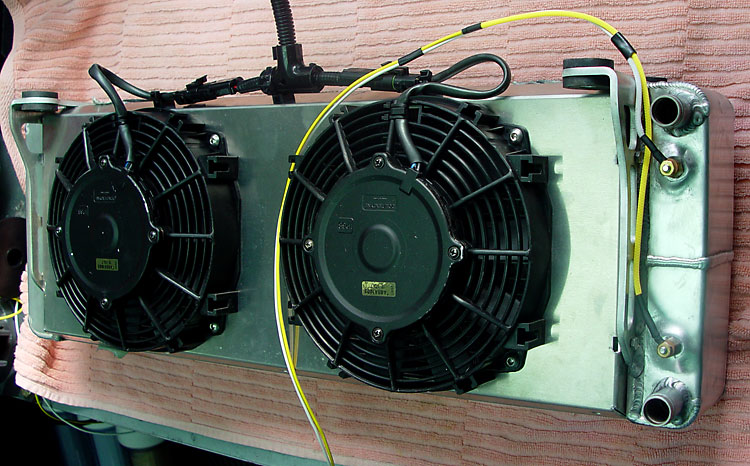

|
 If the heat exchanger fans are wired as instructed -- relay trigger to the intercooler pump hot lead -- the fans will be running wide open the entire time that the truck is running. Installing an on-off switch in the cockpit is an option, but I hate having things to remember. So I rigged the HE fans (Afco prefabbed shroud) to come on as needed. I used a SPAL PWM radiator fan controller. The SPAL controller has low (50% power) and high (100%) set points for the fans to come on, and will vary the power in between. |
|
The harness also does not show the wire for the SPAL sender. I runs in the same branch as the gauge senders. Note also that I had to change the mounting location of the SPAL after I decided to retain the hood latch (I was originally planning to use hood pins only).
|
| The fuse shown is to the SPAL. The intercooler pump fuse is mounted on a plate with the stock fuel pump dropping resistor. |
| The system works great. One curious thing, though, is that I initially installed a 20 amp fuse. The 8" puller fans should take no more than 6-7 amps each. But it popped the fuse. I installed a 25 amp fuse, and it has held up sp far. |
 The
senders shown here go to a
The
senders shown here go to a